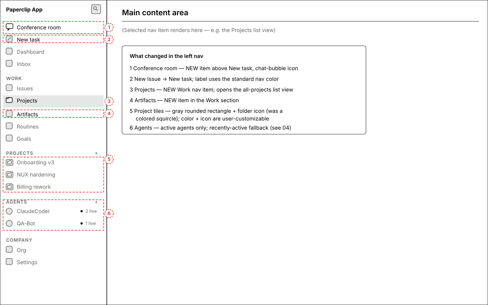
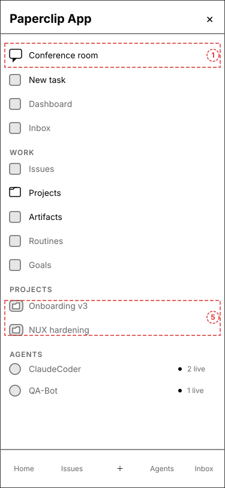
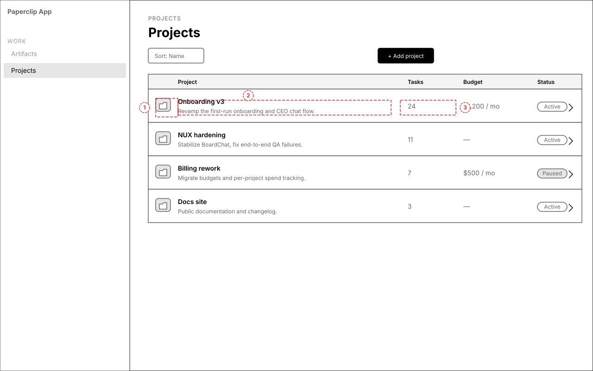
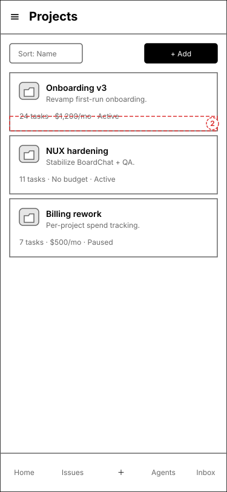
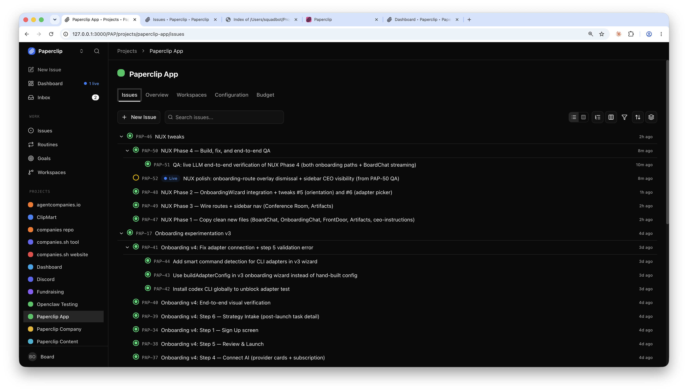
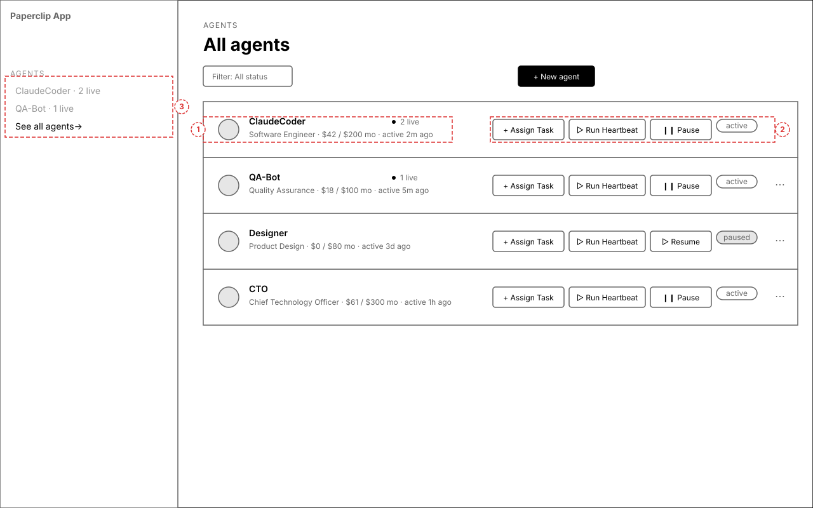
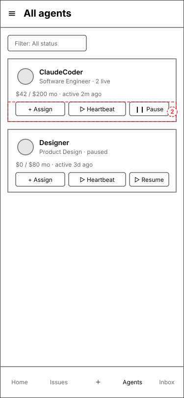
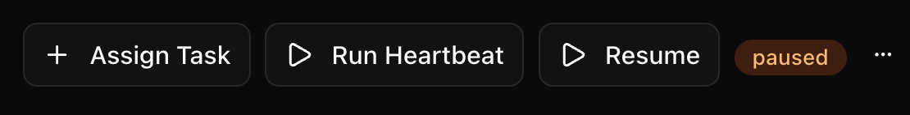
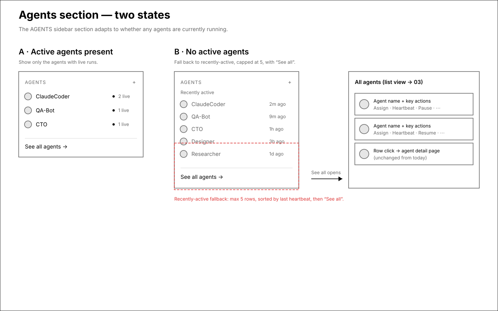
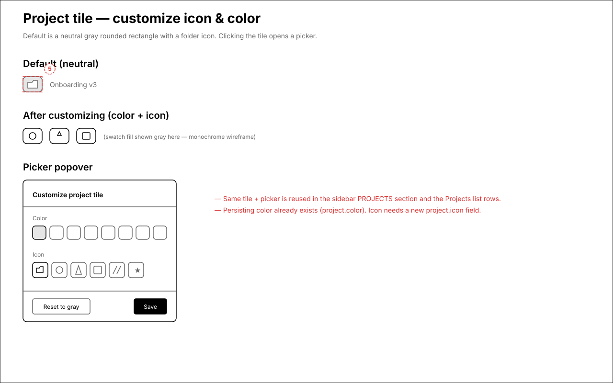

Information Architecture — left nav & related views
Low-fidelity wireframes for the proposed left-navigation restructure and the two new list views (Projects, Agents). Monochrome and structural only — color, spacing, and final iconography are intentionally not represented. Click any wireframe to zoom.
What this set covers
Six discrete changes to the main app's information architecture, all sketched below.
- Conference room — new placeholder nav item above "New task", chat-bubble icon (screen 1).
- New Issue → New task — renamed; label uses the standard nav text color, not the muted treatment it has today (screen 1).
- Artifacts — new item in the Work section (screen 1).
- Projects as a Work nav item — opens an all-projects list view: per-row overview, task count, budget; row click opens today's project detail (screens 1 & 2).
- Project tiles — colored squircle becomes a neutral gray rounded rectangle with a folder icon; color + icon are user-customizable (screens 1 & 5).
- Agents section — show active agents only when any are running; otherwise show up to 5 recently-active with "See all" → agents list view with per-row key actions (screens 3 & 4).
1.Left navigation (redesigned)
The full sidebar with every nav change applied. Numbered callouts map to the change list.


Annotations
- 1 — Conference room: new item above New task, chat-bubble icon.
- 2 — New Issue → New task; standard nav label color.
- 3 — Projects: new Work nav item, opens the list view.
- 4 — Artifacts: new Work item.
- 5 — Project tiles: gray rounded rectangle + folder icon.
- 6 — Agents section adapts to active/recent (screen 4).
2.Projects list view
Opened from the new "Projects" Work nav item. Each project is a row with an at-a-glance summary; clicking a row opens today's project detail view unchanged.



Annotations
- 1 — Gray folder tile (same primitive as the sidebar).
- 2 — Overview = project description, one line, truncated.
- 3 — Task count + budget + status per row.
3.Agents list view ("See all")
Opened from "See all" in the Agents sidebar section. Each row carries the key actions from the agent detail page; clicking a row opens today's agent detail unchanged.



Annotations
- 1 — Identity: icon, name, role, budget spent/limit, last active.
- 2 — Key actions inline: Assign Task, Run Heartbeat, Pause/Resume, status, ⋯.
- 3 — Entry point: "See all" link in the sidebar Agents section.
4.Agents section — active vs. recently-active
How the sidebar Agents section chooses what to show. Desktop-only diagnostic.

5.Project tile — customize icon & color
Default neutral tile and the picker opened by clicking it. Desktop-only overlay.

project.color already exists; an icon field is new.Open questions
- Terminology — The issue calls items "tasks (formerly issues)". Do you want the Issues nav item / page renamed to Tasks globally, or only the "New task" button + the "Tasks" count on project rows for now?
- Conference room — Placeholder only: it appears in nav but routes to an empty page for now. Confirm that's the intended scope.
- Projects: dual presence — Keep both the new "Projects" Work nav item (→ list view) and the existing collapsible PROJECTS section (individual projects)? The wireframes assume yes.
- Row data — Task count and budget aren't on the Project type today. OK to add a lightweight count/budget lookup for the list rows (slightly more backend work)?
- Project icon — Customizable icon needs a new
project.iconfield + picker. Confirm we should build icon customization now vs. color-only first. - Ordering within Work — Proposed order: Issues, Projects, Artifacts, Routines, Goals. Adjust freely.